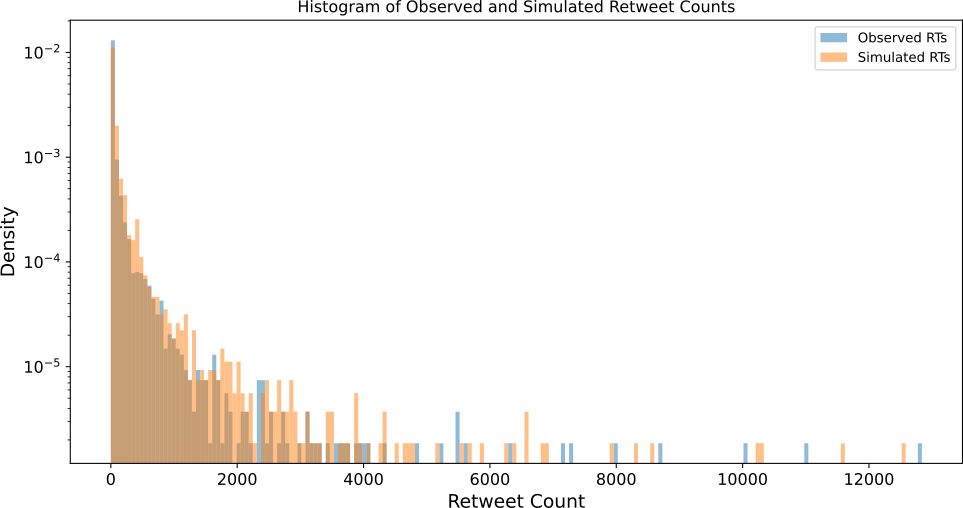
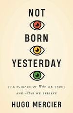

The Social Dynamics around Misinformation Spreading on Social Media
2024-11-13
Digital Humanism & social media
Shaping digital technology in line with human values & needs
Psychology & computational social science:
Designing and using social media in ways that foster individual and societal well-being.
- mental health
- extremism & polarization
- echo chambers & misinformation

Why the social dynamic is key

- Most interventions focus on information & accuracy
- Beliefs are shaped by our social identity
- Emotions attract attention & increase sharing
- Group & emotion dynamics are central on social media
- Social media algorithms mirror these human patterns
Our project on misinformation

Observational social media analyses of emotions
Experiments: Psychological interventions 
 Agent-based modelling: network & algorithms
Agent-based modelling: network & algorithms
1) Causal effects of misinformation
- Matching news posts to create 2 similar groups
- Emotions in the news, political orientation, followers, …
- Comparison: Unique effect of untrustworthy news sources


Why were people angry?

- Higher anger in people good & bad at recognizing false news
- Angry responses because most people recognize false news
- Anger arose when information contradicts existing beliefs
\(\rightarrow\) Emotion \(\neq\) Manipulation
Misinformation as symptom of polarization
- Trust in institutions:
- Corruption => more conspiracies
- Not feeling represented
- Frustration with real-world societal problems
- Polarization of elites plays an important role (2, 3, 4)


What can we do?
- People not gullible & beliefs socially motivated
- Motivated minorities: hard to reach & convince
Our approach
- Psychological interventions as prevention: less polarized beliefs & groups
- Algorithmic interventions: misinformation by politicians

Changing attitudes via social identity
- Intervention that associates a (misinformed) belief with an incongruent social identity
- Complementary & Alternative Medicine (CAM) vs. right-wing extremism
- How: Intervention provides
- historical information
- news articles
For the curious…

Book recommendations

Mercier, 2020: Cognitive Science of misinformation & propaganda

Thank you & time for questions!
Project website: https://hannahmetzler.eu/emomis

Emotions & COVID-misinformation
- Actual true & false COVID-19 headlines from fact-checking websites & mainstream news sources in Austria in 2021
- Accuracy ratings (discernment)
- Emotions increase gulliblity to political news in the US (Martel et al. 2020 )


Why were people angry?
First thoughts after seeing COVID-19 news headlines

Social dynamic around
misinformation on Twitter